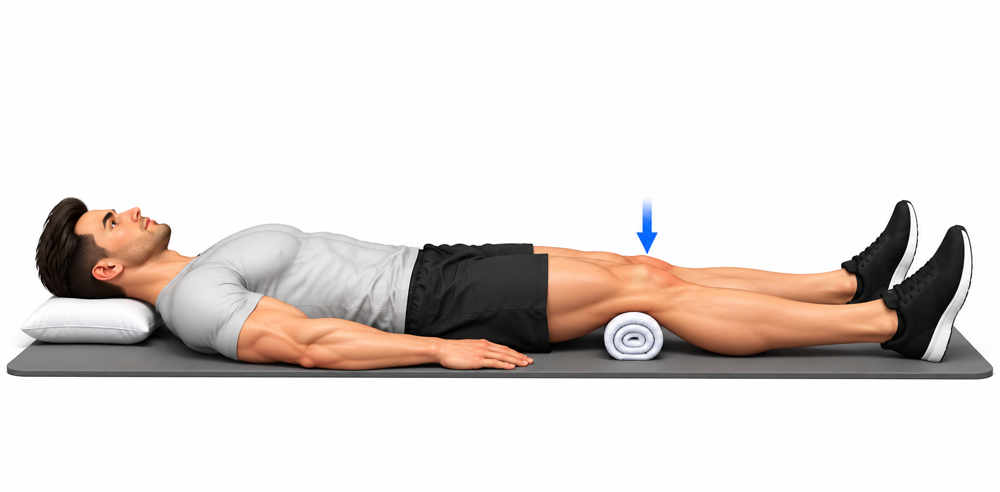
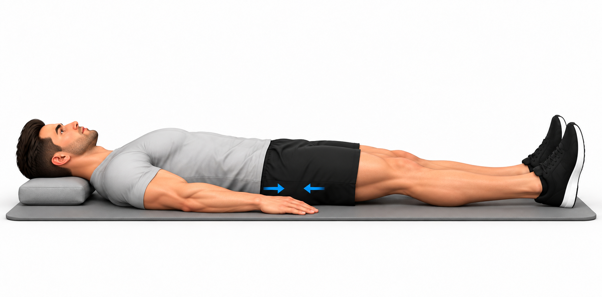
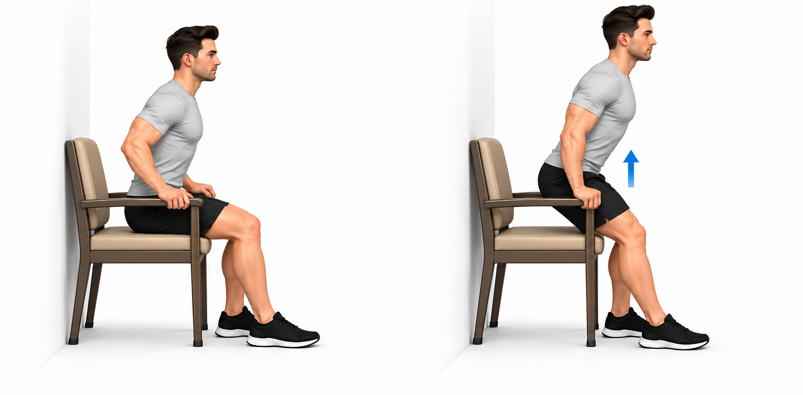
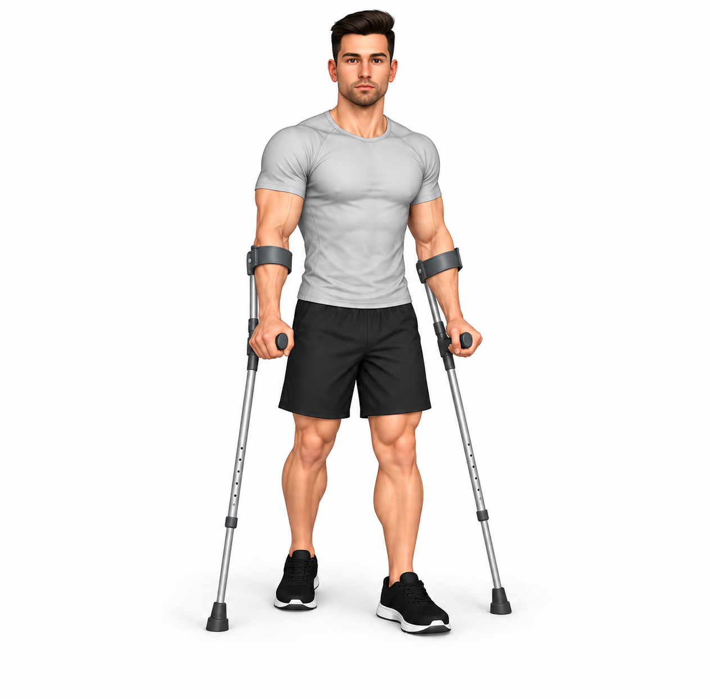

Por critérios, autorização e proteção dos tecidos.
Recomendações e precauções
O seu plano
Faça apenas os exercícios selecionados e a dose prescrita. As seis opções não são obrigatórias na mesma sessão. Este plano é para a recuperação após a alta; não substitui as instruções da equipa que o operou.
Proteção da prótese
Confirme quanto pode apoiar e quais os movimentos temporariamente limitados. Não aumente o apoio, a amplitude ou a resistência por iniciativa própria. As restrições variam com a cirurgia; não há uma regra de 90 graus ou de cruzar pernas igual para todas as pessoas. Se recebeu essas restrições, cumpra-as pelo período indicado.
Marcha e canadianas
Use o andarilho ou as canadianas prescritas e previamente ajustadas. Faça trajetos curtos, com passos controlados. Com duas canadianas e apoio autorizado: avance os apoios, depois a perna operada e depois a outra, conforme o ensino recebido. Não abandone os auxiliares enquanto coxear, perder equilíbrio ou tiver restrição de carga.
Sentar e levantar
Prefira uma cadeira firme, estável e com braços, com a altura indicada pela equipa. Empurre os braços da cadeira para se levantar; não puxe pelas canadianas. Ao sentar, recue até sentir a cadeira atrás das pernas e desça com controlo. Coloque a perna operada ligeiramente à frente se isso facilitar, dentro das suas restrições.
Escadas
Treine primeiro com um profissional. Use o corrimão e o auxiliar na outra mão, conforme ensinado. Habitualmente, ao subir avança primeiro a perna não operada; ao descer, o auxiliar e a perna operada. Um degrau de cada vez. A técnica muda se não puder apoiar, tiver limitações na outra perna ou não houver corrimão: peça instruções próprias.
Cama, carro e atividades diárias
Entre e saia da cama e do carro com a técnica ensinada, mantendo o tronco e as pernas alinhados dentro dos limites prescritos. Para mudar de direção, dê pequenos passos em vez de rodar sobre o pé fixo. Use ajuda para vestir-se e calçar-se se necessário. As posições para dormir dependem das suas indicações; não force uma posição dolorosa.
Conforto e inchaço
Intercale atividade com pausas e eleve confortavelmente a perna se ajudar no inchaço. Se aliviar, aplique frio protegido por toalha durante 10–15 minutos, sem adormecer e sem molhar ou pressionar a ferida. Confirme antes se tiver alterações de sensibilidade, circulação ou intolerância ao frio. Não massaje a ferida nem a barriga da perna inchada ou dolorosa.
Ferida e medicação
Siga os cuidados do penso e da ferida e a medicação da alta. Não interrompa o anticoagulante nem altere as meias de compressão prescritas sem orientação. Os exercícios do tornozelo não substituem a prevenção de trombose prescrita.
Como fazer e ajustar
Faça movimentos lentos e respire normalmente. Pare perante dor súbita, sensação de deslocação, falha ou perda de controlo. Se a dor, o inchaço ou a marcha estiverem claramente piores depois da sessão ou na manhã seguinte, reduza e contacte a equipa para ajustar. Não avance de fase só porque passaram dias ou semanas.
Sinais de alarme
Ligue 112 perante falta de ar súbita, dor no peito ou desmaio. Procure avaliação urgente perante dor súbita forte na anca com incapacidade de apoiar, deformidade, queda com dor importante, pé frio/pálido ou dor e inchaço novos na barriga da perna. Contacte a equipa cirúrgica no próprio dia perante febre, drenagem da ferida, vermelhidão crescente ou dor em agravamento.

Mobilidade do tornozelo — após prótese da anca
Sugestão: 1 × 10 repetições · repouso 30 s
posicao inicial
- Sentado ou deitado, apoie a perna e o calcanhar confortavelmente, deixando o pé livre para mexer.
execucao
- Mova lentamente o pé para cima e para baixo, sem forçar.
- Uma subida e descida completas contam como uma repetição.
pontos chave
- Não desenhe movimentos amplos para dentro nem force a ponta do pé.
- Faça apenas o lado, apoio, amplitude e dose prescritos.
- Após prótese da anca, faça apenas se autorizado para a sua cirurgia e dentro da carga e amplitude prescritas.
erros comuns
- Usar impulso, forçar dor ou continuar após perder controlo.
dicas
- Respire normalmente. Peça ensino da técnica antes de treinar sozinho.
Dose inicial ajustável; confirmar lado, carga permitida, direção, amplitude, auxiliares e frequência antes de selecionar. Fazer apenas a seleção prescrita. Parar perante dor súbita, sensação de deslocação ou perda de controlo. Não progredir só pelo tempo decorrido.

Isométrico de quadricípite — após prótese da anca
Sugestão: 5 × 10 s · repouso 20 s
posicao inicial
- De costas, cabeça apoiada, perna alongada e pequena toalha enrolada debaixo do joelho.
execucao
- Contraia a parte anterior da coxa, pressionando suavemente o joelho contra a toalha.
- Mantenha pelo tempo prescrito, relaxe e repita.
pontos chave
- Não levante a bacia nem force a extensão. Não é necessário fazer força máxima.
- Faça apenas a dose e a amplitude prescritas. Pare perante dor aguda ou perda de controlo.
- Após prótese da anca, faça apenas se autorizado para a sua cirurgia e dentro da carga e amplitude prescritas.
erros comuns
- Usar impulso, prender a respiração ou aumentar a dificuldade sem controlo.
dicas
- Respire normalmente e peça ensino da técnica se tiver dúvidas.
Dose inicial ajustável; confirmar lado, carga permitida, direção, amplitude, auxiliares e frequência antes de selecionar. Fazer apenas a seleção prescrita. Parar perante dor súbita, sensação de deslocação ou perda de controlo. Não progredir só pelo tempo decorrido.

Isométrico glúteo deitado — após PTA
Sugestão: 5 × 10 s · repouso 20 s
posicao inicial
- Deitado de costas numa superfície firme e confortável, cabeça apoiada e pernas afastadas numa largura confortável.
execucao
- Contraia suavemente as nádegas, sem levantar a bacia.
- Mantenha o tempo prescrito, relaxe e repita.
pontos chave
- Não é uma ponte. Não prenda a respiração nem empurre para provocar movimento da anca.
- Respeite a carga, os movimentos e a dose prescritos para a sua cirurgia.
erros comuns
- Forçar dor, perder controlo ou ultrapassar as restrições prescritas.
dicas
- Respire normalmente. Peça ensino presencial da técnica.
Dose inicial ajustável; confirmar lado, carga permitida, direção, amplitude, auxiliares e frequência antes de selecionar. Fazer apenas a seleção prescrita. Parar perante dor súbita, sensação de deslocação ou perda de controlo. Não progredir só pelo tempo decorrido.

Deslizar o calcanhar — após prótese da anca
Sugestão: 1 × 10 repetições · repouso 30 s
posicao inicial
- De costas, cabeça apoiada e pernas numa posição confortável.
execucao
- Deslize o calcanhar na direção da bacia, fletindo o joelho dentro da amplitude tolerada.
- Deslize de novo para alongar a perna, sem forçar o fim do movimento.
pontos chave
- O calcanhar mantém contacto com a superfície. A imagem não define a amplitude obrigatória.
- Faça apenas a dose e a amplitude prescritas. Pare perante dor aguda ou perda de controlo.
- Após prótese da anca, faça apenas se autorizado para a sua cirurgia e dentro da carga e amplitude prescritas.
- Não procure a amplitude da imagem: pare no limite de flexão prescrito. Não cruze a linha média.
erros comuns
- Usar impulso, prender a respiração ou aumentar a dificuldade sem controlo.
dicas
- Respire normalmente e peça ensino da técnica se tiver dúvidas.
Dose inicial ajustável; confirmar lado, carga permitida, direção, amplitude, auxiliares e frequência antes de selecionar. Fazer apenas a seleção prescrita. Parar perante dor súbita, sensação de deslocação ou perda de controlo. Não progredir só pelo tempo decorrido.

Sentar e levantar com braços da cadeira — após PTA
Sugestão: 1 × 5 repetições · repouso 60 s
posicao inicial
- Cadeira firme, estável e com braços, na altura indicada. Pés apoiados; perna operada ligeiramente à frente se isso facilitar.
execucao
- Aproxime-se da borda com controlo e apoie as mãos nos braços da cadeira.
- Empurre os apoios para se levantar, sem puxar pelas canadianas. Para sentar, recue até sentir a cadeira e desça com controlo.
pontos chave
- Respeite o limite de flexão que lhe foi indicado. Não use uma cadeira baixa, instável ou que deslize.
- No início pode ser apenas treino de transferência, com ajuda; as séries de reforço só quando autorizadas e toleradas.
- Respeite a carga, os movimentos e a dose prescritos para a sua cirurgia.
erros comuns
- Forçar dor, perder controlo ou ultrapassar as restrições prescritas.
dicas
- Respire normalmente. Peça ensino presencial da técnica.
Dose inicial ajustável; confirmar lado, carga permitida, direção, amplitude, auxiliares e frequência antes de selecionar. Fazer apenas a seleção prescrita. Treino de transferência, com supervisão se necessária; não exige cinco repetições seguidas. Parar perante dor súbita, sensação de deslocação ou perda de controlo. Não progredir só pelo tempo decorrido.

Marcha com duas canadianas — após PTA
Sugestão: 1 × 120 s · repouso 60 s
posicao inicial
- Canadianas ajustadas, ponteiras íntegras, piso plano e livre de obstáculos; respeite o apoio autorizado.
execucao
- Conforme ensinado, avance as duas canadianas um pouco, depois a perna operada e depois a outra.
- Faça passos curtos e pare para descansar antes de coxear mais ou perder equilíbrio.
pontos chave
- A imagem mostra a posição dos apoios; não define a percentagem de carga nem substitui o ensino da sequência.
- Se lhe foi indicado não apoiar ou usar andarilho, siga essa técnica específica. Não inicie escadas sozinho.
- Respeite a carga, os movimentos e a dose prescritos para a sua cirurgia.
erros comuns
- Forçar dor, perder controlo ou ultrapassar as restrições prescritas.
dicas
- Respire normalmente. Peça ensino presencial da técnica.
Dose inicial ajustável; confirmar lado, carga permitida, direção, amplitude, auxiliares e frequência antes de selecionar. Fazer apenas a seleção prescrita. Pode dividir em períodos menores. Não progredir sem controlo e tolerância. Parar perante dor súbita, sensação de deslocação ou perda de controlo. Não progredir só pelo tempo decorrido.